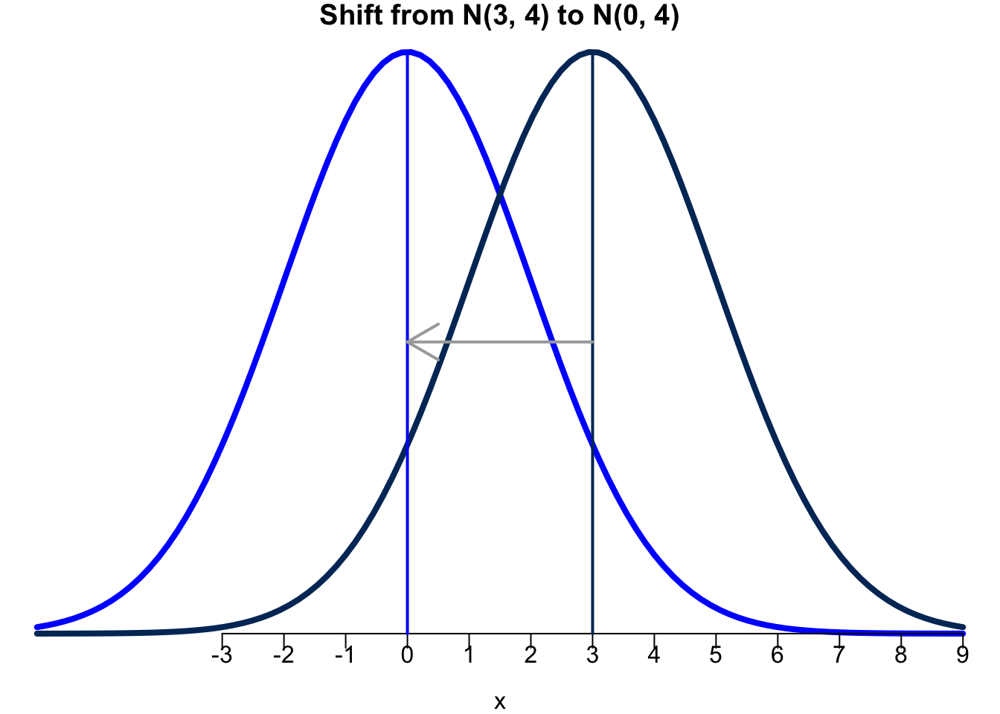
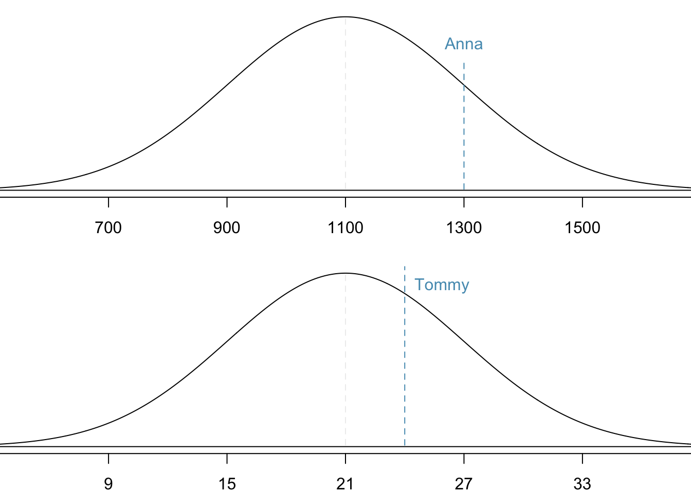
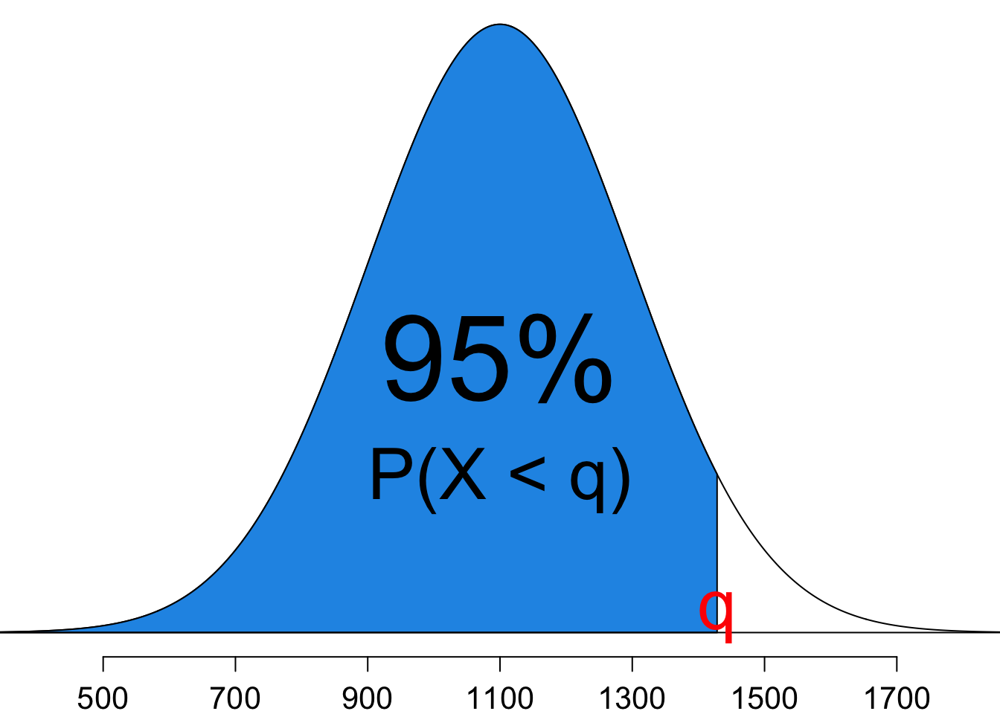

10 Continuous Probability Distributions
10.1 Introduction
A continuous random variable can take on any values from an interval of the real line.
Instead of probability functions, a continuous random variable, \(X\), has the probability density function (pdf) \(f(x)\) such that for any real value \(a < b\), \[P(a < X < b) = \int_{a}^b f(x) dx\]
The cumulative distribution function (cdf) of \(X\) is defined as \[F(x) := P(X \le x) = \int_{-\infty}^x f(t)dt\]
Every probability density function must satisfy (1) \(f(x) \ge 0\) for all \(x\); (2) \(\int_{-\infty}^{\infty} f(x) dx = 1\)
üòé Luckily, we don‚Äôt deal with integrals in this course.
Density Curve
- A probability distribution function generates a graph called a density curve that shows the likelihood of a random variable at all possible values.
- The area under the density curve between \(a\) and \(b\): \(P(a < X < b) = \int_{a}^b f(x) dx\).
- The total area under any density curve is equal to 1: \(\int_{-\infty}^{\infty} f(x) dx = 1\)
Commonly Used Continuous Distributions
- R Shiny app is a Continuous Distribution calculator.
- In this course, we will touch on normal (Gaussian), student’s t, chi-square, F
- Some other common distributions include uniform, exponential, gamma, beta, inverse gamma, Cauchy, etc. (MATH 4700)
10.2 Normal (Gaussian) Distribution
- The normal distribution, \(N(\mu, \sigma^2\)), has the probability distribution function given by \[\small f(x) = \frac{1}{\sqrt{2\pi}\sigma}e^{\frac{-(x-\mu)^2}{2\sigma^2}}, \quad -\infty < x < \infty\]
- This distribution has two parameters: mean, \(\mu\), and variance, \(\sigma^2\) (standard deviation \(\sigma\)).
- It is always bell-shaped and symmetric about the mean, \(\mu\).
- When \(\mu = 0\) and \(\sigma = 1\), \(N(0, 1)\) is called standard normal.
- Below are examples of normal distribution curves and how they change with different means and standard deviations.
10.3 Standardization and Z-Scores
- Standardization allows us to convert \(N(\mu, \sigma^2)\) to \(N(0, 1)\).
-
Why do we perform standardization?
- We want to put data on a standardized scale, because it helps us make comparisons more easily!
- If \(x\) is an observation from a distribution with mean \(\mu\) and standard deviation \(\sigma\), the standardized value of \(x\) is its so-called \(z\)-score: \[z = \frac{x - \mu}{\sigma}\]
- The \(z\)-score tells us how many standard deviations \(x\) falls away from the mean and in which direction.
- Observations larger than the mean have positive \(z\)-scores.
- Observations smaller than the mean have negative \(z\)-scores.
- A \(z\)-score -1.2 means that \(x\) is 1.2 standard deviations to the left of or below the mean.
- A \(z\)-score 1.8 means that \(x\) is 1.8 standard deviations to the right of or above the mean.
- If \(X \sim N(\mu, \sigma^2)\), \(Z = \frac{X - \mu}{\sigma}\) follows the standard normal distribution \(Z \sim N(0, 1)\).
Illustration
- \(X - \mu\) shifts the mean from \(\mu\) to 0.

- \(\frac{X - \mu}{\sigma}\) scales the variation from 4 to 1.
- A value of \(x\) that is 2 standard deviation below the mean, \(\mu\), corresponds to \(z = -2\).
- \(z = \frac{x -\mu}{\sigma} \iff x = \mu + z\sigma\). If \(z = -2\), \(x = \mu - 2\sigma\).
- Figure 10.6 depicts how the values on the x-axis change when standardization is performed.

SAT and ACT Example
- Standardization can help us compare the performance of students on the SAT and ACT, which both have nearly normal distributions.
- The table below lists the parameters for each distribution.
| Measure | SAT | ACT |
|---|---|---|
| Mean | 1100 | 21 |
| SD | 200 | 6 |
- We want to determine whether Anna or Tommy performed better on their respective tests.
- Anna scored a 1300 on her SAT and Tommy scored a 24 on his ACT.
Standardization
- \(z_{A} = \frac{x_{A} - \mu_{SAT}}{\sigma_{SAT}} = \frac{1300-1100}{200} = 1\); \(z_{T} = \frac{x_{T} - \mu_{ACT}}{\sigma_{ACT}} = \frac{24-21}{6} = 0.5\).

- This standardization tells us that Anna scored 1 standard deviation above the mean and Tommy scored 0.5 standard deviations above the mean.
- From this information, we can conclude that Anna performed better on teh SAT than Tommy performed on the ACT.
10.4 Tail Areas and Normal Percentiles
Finding Tail Areas \(P(X < x)\)
- Finding tail areas allows us to determine the percentage of cases that are above or below a certain score.
- Going back to the SAT and ACT example, this can help us determine the fraction of students have an SAT score below Anna’s score of 1300.
- This is the same as determining what percentile Anna scored at, which is the percentage of cases that had lower scores than Anna.
- Therefore, we are looking for \(P(X < 1300 \mid \mu = 1100, \sigma = 200)\) or \(P(Z < 1 \mid \mu = 0, \sigma = 1)\).
- We can calculate this value by using R.

Calculation in R
- With
meanandsdrepresenting the mean and standard deviation of a normal distribution,- use
pnorm(q, mean, sd)to compute \(P(X \le q)\) - use
pnorm(q, mean, sd, lower.tail = FALSE)to compute \(P(X > q)\)
- use
Second ACT and SAT Example
-
Step 1: State the problem
- We want to compute \(P(X \ge 1190)\).
- Step 2: Draw a picture
-
Step 3: Find \(z\)-score
- \(z = \frac{1190 - 1100}{200} = 0.45\) and we want to compute \(P(X > 1190) = P\left( \frac{X - \mu}{\sigma} > \frac{1190 - 1000}{200} \right) = P(Z > 0.45) = 1 - P(Z \le 0.45)\)
- Step 4: Find the area using
pnorm()
1 - pnorm(0.45)[1] 0.3263552Normal Percentiles in R
- To get the \(100p\)-th percentile (or the \(p\) quantile \(q\) ), given probability \(p\),
- use
qnorm(p, mean, sd)to get a value of \(X\), \(q\), such that \(P(X \le q) = p\) - use
qnorm(p, mean, sd, lower.tail = FALSE)to get \(q\) such that \(P(X \ge q) = p\)
- use
SAT and ACT Example
- What is the 95th percentile for SAT scores?
-
Step 1: State the problem
- We want to find \(x\) s.t \(P(X < x) = 0.95\).
- Step 2: Draw a picture

We want to find an \(x\) value of the normal distribution, which is greater than 95% of all other cases.
-
Step 3: Find \(z\)-score s.t. \(P(Z < z) = 0.95\) using
qnorm():
(z_95 <- qnorm(0.95))[1] 1.644854-
Step 4: Find the \(x\) of the original scale
- \(z_{0.95} = \frac{x-\mu}{\sigma}\). So \(x = \mu + z_{0.95}\sigma\).
(x_95 <- 1100 + z_95 * 200)[1] 1428.971- The 95th percentile for SAT scores is 1429.
qnorm(p = 0.95, mean = 1100, sd = 200)[1] 1428.97110.5 Finding Probabilties
üëâ ALWAYS draw and label the normal curve and shade the area of interest.
- üëâ Less than
- \(\small P(X < x) = P(Z < z)\)
pnorm(z, mean = 0, sd = 1)pnorm(x, mean = mu, sd = sigma)
- üëâ Greater than
- \(\small P(X > x) = P(Z > z) = 1 - P(Z \le z)\)
1 - pnorm(z)
-
üëâ Between two numbers
- \(\small P(a < X < b) = P(z_a < Z < z_b) = P(Z < z_b) - P(Z < z_a)\)
pnorm(z_b) - pnorm(z_a)
-
üëâ Outside of two numbers \((a < b)\) \[\small \begin{align} P(X < a \text{ or } X > b) &= P(Z < z_a \text{ or } Z > z_b) \\ &= P(Z < z_a) + P(Z > z_b) \\ &= P(Z < z_a) + 1 - P(Z < z_b) \end{align}\]
pnorm(z_a) + 1 - pnorm(z_b)pnorm(z_a) + pnorm(z_b, lower.tail = FALSE)
10.6 Checking Normality: Normal Quantile Plot
- Many statistical methods assume variables are normally distributed.
- Therefore, testing the appropriateness of the normal assumption is a key step.
- We can check this normality assumption using a normal quantile plot (normal probability plot) or a Quantile-Quantile plot (QQ plot).
- \(X\)-axis: Quantiles of the ordered data if the data were normally distributed.
- \(Y\)-axis: Ordered data values
- If the data are normally distributed, the points on the QQ plot will lie close to a straight line.
QQ plot in R
10.7 Exercises
- What percentage of data that follow a standard normal distribution \(N(\mu=0, \sigma=1)\) is found in each region? Drawing a normal graph may help.
- \(Z < -1.75\)
- \(-0.7 < Z < 1.3\)
- \(|Z| > 1\)
- The average daily high temperature in June in Chicago is 74\(^{\circ}\)F with a standard deviation of 4\(^{\circ}\)F. Suppose that the temperatures in June closely follows a normal distribution.
- What is the probability of observing an 81\(^{\circ}\) F temperature or higher in Chigcago during a randomly chosen day in June?
- How cool are the coldest 15% of the days (days with lowest average high temperature) during June in Chicago?
- Head lengths of Virginia opossums follow a normal distribution with mean 104 mm and standard deviation 6 mm.
- Compute the \(z\)-scores for opossums with head lengths of 97 mm and 108 mm.
- Which observation (97 mm or 108 mm) is more unusual or less likely to happen than another observation? Why?